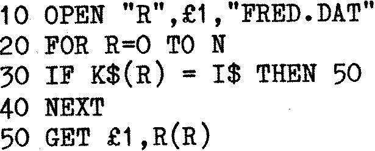

80-Bus News |
September–October 1983 · Volume 2 · Issue 5 |
| Page 64 of 67 |
|---|
record numbers and N is the number of records a search for I$ would go something like this:

This would acceptably fast as the search of the arrays would only take a second or so, but the limitation would be the space available for the arrays. Even if the contents of the key array were kept small, and the record number array made integer you could only keep track of a couple of thousand records before the dreaded OM error would occur, the reason being that although the array may only be a few K long in total, BASIC has to keep pointers to the arrays which naturally gobbles space.
Now the contents of the arrays must have come from somewhere originally, and we may presuppose that they would have been constructed as sequential files on disk and on start-up read directly into the arrays. So the information in the arrays is already available from disk. A variation on the theme would be to perform the search for the record number directly from disk, thus:
Now this would be somewhat slower, but has the advantage that any number of records (within the limits of disk size) may be accomodated. Notice that the key string is the first four bytes of J$ and the record number is held as a string in the last four bytes of J$. The major snag is updating the index.
A further thing about indices is that they may of course alter the order of a random access file. For instance, we wish to look at the random records in alphabetical key order. It would be a major job to sort any sizeable random database into alphabetical order, whereas sorting the index into order and then reading the random records in sequential index order would be a lot less time consuming albeit somewhat slower on display as each random record would have to be read separately and there would inevitably be lot head shifting to be done. The problem arises in sorting the sequential index, or getting it into order in the first place. Sequential files are not easily modified. Any change requires the file to be copied entirely which becomes a bit tedious (if not time comsuming). For instance, let us suppose we are keeping FRED.NDX in alphabetical order and wish to insert a new key entry, I$ with its appropriate record number I. We must look through FRED.NDX sequentially, test if I$ is greater or lesser that the current input J$, if it is not write out the current J$ to a new file. If the current J$ is greater than I$ then write out the current I$, followed by the current J$, and then continue copying J$ to the end of the file. Something like this.
| Page 64 of 67 |
|---|